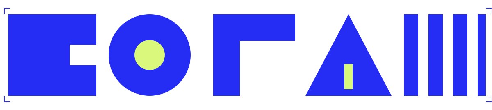

01
09:30–10:45
Linocut
Layer lab
Cut a small shape. Let the same block make three different impressions.
One day. Five ways to make a mark.
All levels welcome.
Common Press, North Hall
09:30–17:00
Choose the methods that interest you. Materials are provided; each session has its own access notes.
Linocut
Cut a small shape. Let the same block make three different impressions.
Monoprint
Work directly on the plate. Pull a sequence of unpredictable textures.
Stencil
Fold, rotate and layer a stencil to build a set of bold forms.
Two-color risograph
Swap one color with someone else. See how the whole print changes.
Letterpress
Set a word in wood type. Print a small edition to take home.
A small block becomes a pattern. A shifted stencil becomes a new shape. An ordinary word becomes something you can hold.
Open Form brings five printmaking methods into one shared studio. Choose a route with room to experiment, talk and let the prints dry.
Choose your sessions ↗
A block, a plate, a stencil, two colors, a word. The same ink can take many forms.